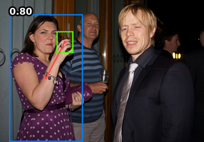

Australian Centre for Robotic Vision


Qualitative Results
Detected human–object interactions on HICO-DET
standing on a snowboard

holding an umbrella
carrying a suitcase
sitting at a dining table
sitting on a bench
flying an airplane
holding a surfboard
wielding a baseball bat
riding a bike
holding a wine glass
holding a fork
jumping skis
holding a teddy bear
petting a zebra

sitting on a chair
riding an elephant
wearing a tie
swinging a tennis racket
holding a toothbrush
standing on a surfboard
Detected human–object interactions on V-COCO
carrying a backpack
cutting with a knife
drinking from a bottle
eating with a fork
holding a surfboard
eating a hotdog
holding a knife
jumping a skateboard
kicking a sports ball
eating a pizza
holding a tennis racket
reading a book
laying on a bed
sitting on a couch
riding a horse
talking on a phone
working on a computer
riding a boat
throwing a frisbee
riding a motorcycle
Citation
If you find our work useful for your research, please consider citing us
@article{zhang2021upt,
author = {Frederic Z. Zhang, Dylan Campbell and Stephen Gould},
title = {Efficient Two-Stage Detection of Human-Object Interactions with a Novel Unary-Pairwise Transformer},
booktitle = {TBD},
year = {2021},
}
@inproceedings{zhang2021scg,
author = {Frederic Z. Zhang, Dylan Campbell and Stephen Gould},
title = {Spatially Conditioned Graphs for Detecting Human–Object Interactions},
booktitle = {Proceedings of the IEEE/CVF International Conference on Computer Vision (ICCV)},
month = {October}
year = {2021}
pages = {13319-13327}
}